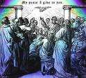

پیروان عیسی خبر خوش را منتشر می کنند
هدیه روح القدس
این پر شدن روح باعث شد که همه آنها شروع به صحبت به زبانهای دیگر کنند. (اعمال رسولان 2:4)
اتفاقاً وقتی پیروان عیسی به این طریق از روح پر شدند، هزاران نفر از کشورهای اطراف اسرائیل برای جشن گرفتن یکی از اعیاد یهودی به اورشلیم آمده بودند. (شما می توانید فهرستی از این کشورها را در اعمال رسولان 2:8-11 بخوانید.) به طور معجزه آسایی، هر یک از این بازدیدکنندگان می توانستند پیروان عیسی را بشنوند که مژده نجات از طریق عیسی مسیح را به زبان خودشان بیان می کردند!
شاگرد، پطرس، سخنرانی بسیار تکان دهنده ای در مورد این که چگونه عیسی، کسی که به دلیل هیچ اشتباهی مصلوب شده بود، پسر خدا است، ایراد کرد. او به جمعیت گفت که نجات از طریق عیسی می آید. بسیاری از جمعیت از سخنان پطرس متاثر شدند که در آن روز بیش از 3000 نفر عیسی را به عنوان مسیح و به عنوان نجات دهنده خود پذیرفتند!
این روز واقعاً آغاز کلیسای مؤمنان به عیسی است. به همه آن تازه ایماندارانی فکر کنید که به خانه های خود به کشورهای بومی خود می روند و به همه دوستان و خانواده خود در مورد نجات از طریق عیسی می گویند! تعداد افرادی که «راه» را که ابتدا کلیسا نامیده می شد، دنبال می کردند، به سرعت در سراسر منطقه ای که اکنون به عنوان خاورمیانه و اروپای مدیترانه شناخته می شود، شروع به افزایش کرد. کتاب اعمال رسولان داستان چگونگی انتشار مژده نجات توسط پیروان عیسی است.

تغییر دین و آزار و اذیت
به یاد داشته باشید که در اورشلیم بود که شاگردان با روح القدس پر شدند و اورشلیم همان جایی بود که گفتن مردم در مورد عیسی بیش از همه مورد اخم قرار می گرفت: بالاخره اینجا جایی است که عیسی به صلیب کشیده شده بود. آزار و اذیت رهبران یهودی که عیسی را به قتل رسانده بودند، اکنون بر گروه جدید و در حال رشد پیروان عیسی متمرکز شده بود.
استفان، واعظ صریح بشارت عیسی، اولین پیرو راه بود که به دلیل موعظه انجیل کشته شد. (اعمال رسولان 6:8-7:60)
دراماتیک ترین تبدیل
علاوه بر قیافا و دیگر کاهنانی که ریاست محاکمه ساختگی عیسی را بر عهده داشتند، یهودی غیور دیگری نیز وجود داشت که نابود کردن همه پیروان عیسی را کار زندگی خود قرار داد. نام آن مرد شائول طرسوس بود.
شائول درخواست کرد و از کاهنان معبد در اورشلیم اجازه گرفت تا یهودیانی را که میتوانست پیدا کند که به راه ایمان داشتند جمع آوری و زندانی کند.
شائول در واقع به شهر دمشق سفر می کرد تا در کنیسه آنجا برای ایمانداران به عیسی جست و جو کند که نور درخشانی از آسمان در اطراف او درخشید. روی زمین افتاد و صدایی شنید که از او پرسید: "شائول، چرا به من جفا می کنی؟" (اعمال رسولان 9:1-19)
"شما کی هستید؟" شائول پرسید. این خود عیسی بود که با شائول صحبت می کرد. خدا شائول را انتخاب کرده بود تا بشارت عیسی مسیح را برای غیریهودیان (هر کسی که یهودی نیست) در همه جا بیاورد. (اعمال رسولان 9)
وقتی پیروان یهودی عیسی شنیدند که شائول به راه ایمان آورده است، باورشان نشد! برای او تبدیل شدن از یکی از بدترین آزاردهنده ها به یکی از گویاترین واعظان آنها بسیار باورنکردنی بود. مدت زیادی طول کشید تا بسیاری از ایمانداران یهودی اعتماد کنند که شائول واقعاً مسلمان شده است. آنها هنوز از او به خاطر تمام کارهایی که در گذشته انجام داده بود می ترسیدند.
هنگامی که شائول خدمت موعظه خود را در میان غیریهودیان آغاز کرد، شروع به استفاده از شکل رومی نام خود کرد: پولس. (شائول شکل یهودی نام او بود).
پولس هزاران مایل را برای انتشار انجیل عیسی طی کرد. می توانید سفرهای او را در اعمال رسولان بخوانید (اعمال رسولان 11:25-اعمال رسولان 28). او به خاطر موعظه و تعلیمش درباره عیسی، آزار و اذیت زیادی را متحمل شد. در نهایت او دستگیر و در رم زندانی شد. پولس از زندان خود در آنجا بود که بسیاری از نامه ها را به کلیساهای پراکنده در سراسر اروپا نوشت که در عهد جدید جمع آوری شده است. به لطف تبدیل پولس، ما کتاب مقدسی داریم که به پیروان عیسی آموزش و تشویق، امید و اطمینان می دهد. خواندن نامه های پولس به این معناست که چگونه به عنوان پیرو عیسی زندگی کنیم.